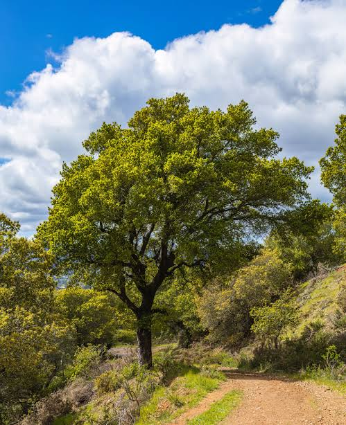
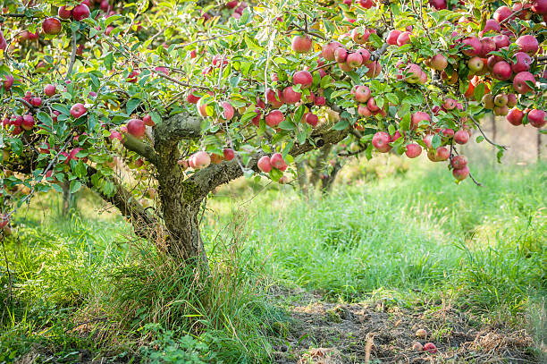

Name: Jonathan Luna
Due Date: 11/4/2026
My Trees Page
Why Trees?
Trees are highly important in our world. They provide oxygen for us to breathe but additionally provide shade and shelter. Trees are naturally a vital part of our ecosystem. Without them, life as we know it would not be possible because we wouldn't have any oxygen at all. They have a calming effect on people and can help reduce stress levels, though this is generally true for general vegetation/greenery. Additionally, trees are used for many purposes, most notably for paper.
Care for our trees!: It's is vital that we take care of our trees and ensure that they continue to thrive for our future generations.
Types of Tree Groups:
- Oak Trees: by far the most common type of tree in the northern hemisphere; most know of them
- Evergreen Trees: trees that are green all year round, even during winter
- Fruit Trees: very important trees that produce fruit. These include: apple trees, cherry trees
- Coniferous Trees: similar to evergreen trees, but produce cones, though still green
Notable Tree Pictures:
Oak Tree:

Apple Tree:
